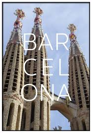

| Ciudades y Comunidades |
Informacion |
|
El Ayuntamiento de Madrid celebra desde el pasado 16 de septiembre y
hasta el próximo día 22 del mismo mes, la Semana Europea de la Movilidad
2019 con diferentes actividades para concienciar de que se pueden realizar
desplazamientos sostenibles por la ciudad.
|

|
El Ayuntamiento de Barcelona declara la emergencia climática en la ciudad
y propone un centenar de medidas para los próximos cinco años. Estas han
trabajado en el proceso de la Mesa para la Emergencia Climática en que han
participado más de 200 entidades miembros de B + S.
|

|
Pais Vasco: Lidera la clasificación. Incluso si se desestimara el ODS correspondiente
al de medio marino (14) pues constituye un indicador no evaluable en todas las autonomías,
Euskadi seguiría el primero. El color verde es predominante. “El País Vasco acumula un 88,24 %
de posiciones muy favorables frente a un 11,76 % de malas situaciones; no muestra ninguna posición
en el estrato intermedio”, resalta el informe. Ente esas malas situaciones está que falla en
ecosistemas terrestres (bosques, desertificación y biodiversidad) y gestión energética,
pues pincha en lo referente a las energías renovables.
|